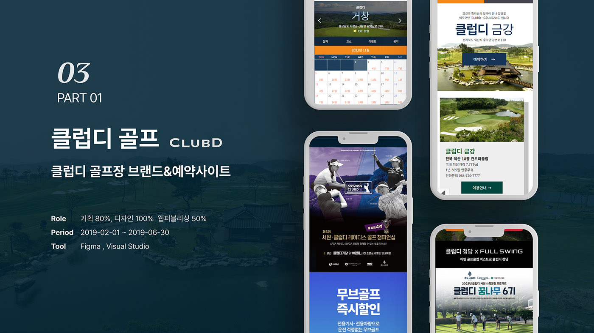
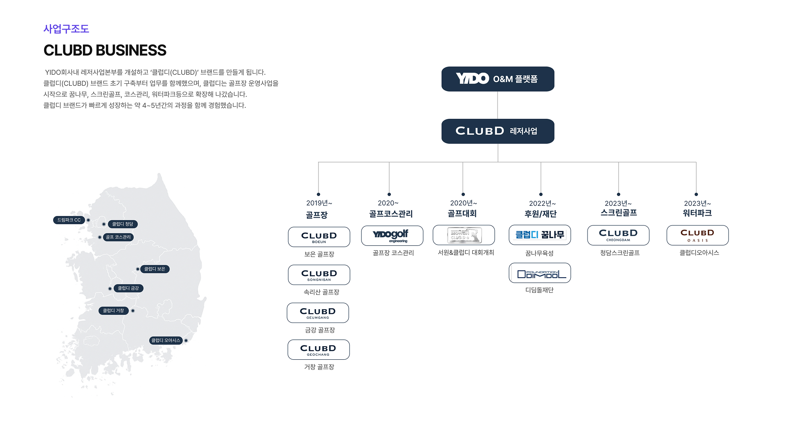
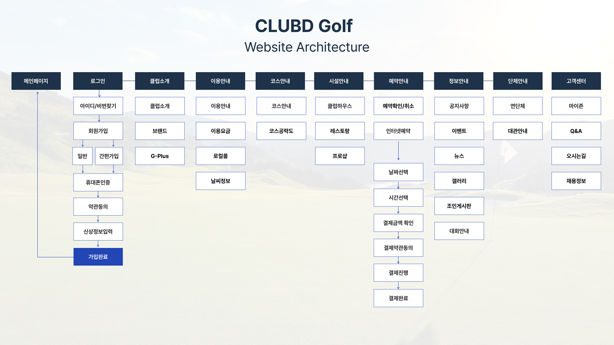
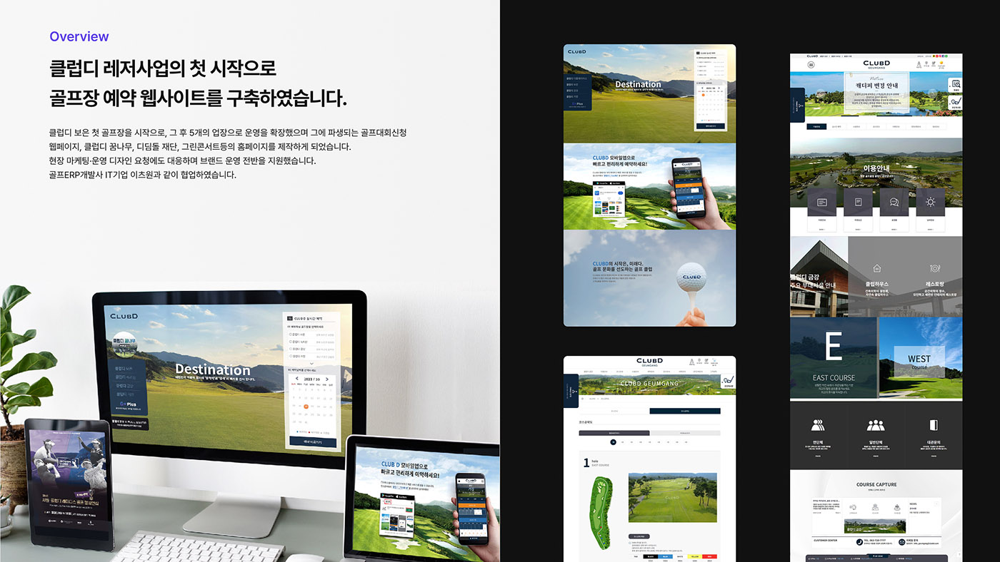
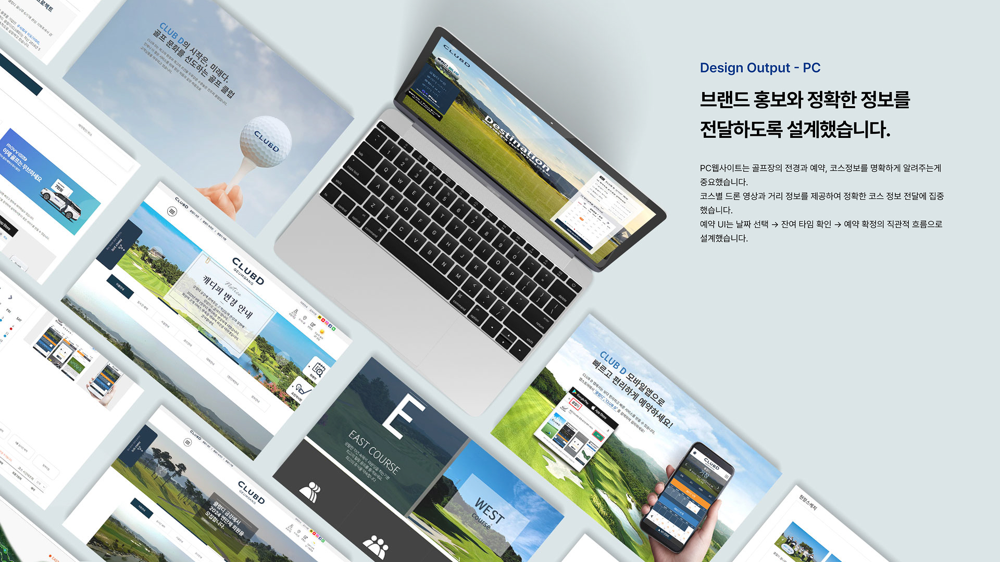
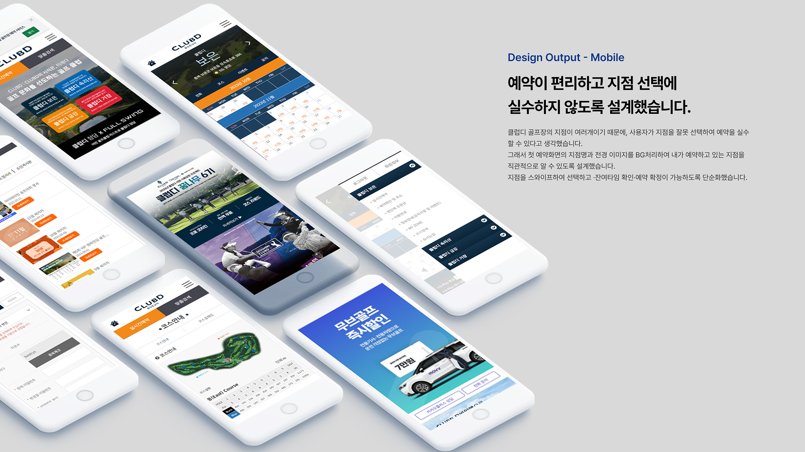
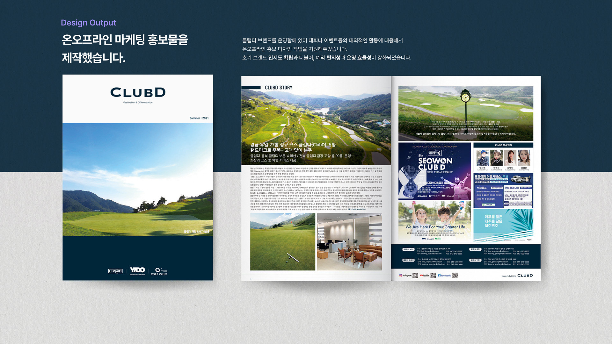

멤버십 앱
골프 클럽 멤버를 위한 프리미엄 예약·관리 앱.
복잡한 골프장 예약 및 멤버십 관리를 하나의 앱으로 통합하여
회원 경험을 혁신한 모바일 서비스의 UX 디자인을 담당했습니다.

골프 클럽 회원들은 예약, 멤버십 관리, 동반자 초대 등을 각각 다른 채널을 통해 처리해야 했습니다. 전화 예약에 의존하거나 웹사이트의 복잡한 UI를 거쳐야 하는 기존 방식은 프리미엄 서비스에 걸맞지 않는 경험을 제공하고 있었습니다.


골프 클럽의 프리미엄 이미지를 디지털 경험으로 옮기는 것이 핵심 과제였습니다. 그린 계열의 브랜드 컬러와 여백을 활용한 고급스러운 레이아웃, 부드러운 애니메이션으로 브랜드 가치와 일치하는 UX를 구현했습니다.



ClubD Golf 프로젝트를 통해 프리미엄 브랜드의 디지털 경험을 설계하는 방법을 깊이 배울 수 있었습니다. 기능적 편의성뿐 아니라 감성적 만족감까지 설계에 담아야 한다는 점이 가장 큰 교훈이었습니다.
